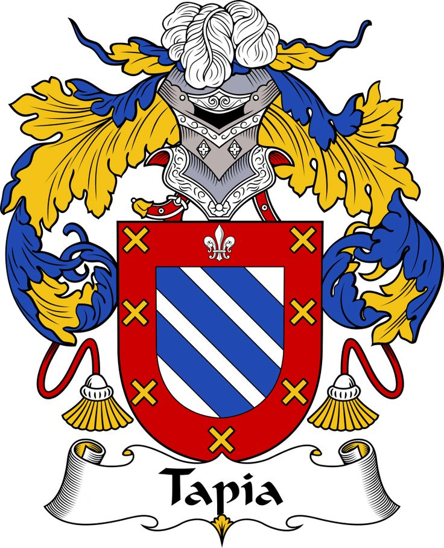

Republica Dominicana
Provincias de la Republica Dominicana
- Santo Domingo
- Poblacion: 2,955,339
- Senador: Antonio Manuel Taveras Guzmán
- Santo Domingo

- Distrito Nacional
- Santiago
- Poblacion: 1,833,451
- Senador: Rafael Eduardo Estrella Virella
- Santiago
- San Cristóbal
- Poblacion: 859,741
- Senador: Franklin Alberto Rodríguez Garabitos
- San Cristóbal

- La Vega
- Poblacion: 420,478
- Senador: Ramón Rogelio Genao Durán
- La Vega

- Puerto Plata
- Poblacion: 168,265
- Senadora: Ginette Altagracia Bournigal
- Puerto Plata
.png)
- San Pedro de Macorís
- Duarte
- Poblacion: 384,789
- Senador: Franklin Martín Romero Morillo
- Duarte
- La Altagracia
- La Romana
- Poblacion: 330,587
- Senador: Ivan José Silva Fernández
- La Romana

- San Juan
- Poblacion: 300,476
- Senador: Félix Ramón Bautista Rosario
- San Juan
- Espaillat
- Poblacion: 333,4019
- Senador: Carlos Gómez Ureña
- Espaillat
.png)
- Azua
- Poblacion: 128,264
- Senadora: Lía Ynocencia Díaz Santana
- Azua
- Barahona
- Poblacion: 138,159
- Senador: José Manuel del Castillo Saviñon
- Barahona
- Monte Plata
- Poblacion: 57,553 9
- Senador: Lenín Valdez Lópezn
- Monte Plata

- Peravia
- Poblacion: 217,241
- Senador: Milciades Marino Franjul Pimentel
- Peravia
.jpg)
- Monseñor Nouel
- Valverde
- Poblacion: 217,026
- Senador: Martín Edilverto Nolasco Vargas
- Valverde
- Sánchez Ramírez
- María Trinidad Sánchez
- Montecristi
- Poblacion: 42,657
- Senador: Ramón Antonio Pimentel Gómez
- Montecristi
- Samaná
- Poblacion: 108,179
- Senador: Pedro Manuel Catraín Bonilla
- Samaná
- Bahoruco
- Poblacion: 111,269
- Senadora: Melania Salvador Jiménez
- Bahoruco
- Hermanas Mirabal
- El Seibo
- Poblacion: 97,144
- Senador: Santiago José Zorrilla
- El Seibo
- Hato Mayor
- Poblacion: 70,141
- Senador: Cristóbal Venerado Castillo
- Hato Mayor

- Dajabón
- Poblacion: 25,983
- Senador: David Rafael Sosa Cerda
- Dajabón
.png)
- Elías Piña
- Poblacion: 43,894
- Senador: Arys Yvan Lorenzo Suero
- Elías Piña
.png)
- San José de Ocoa
- Santiago Rodríguez
- Independencia
- Pedernales
- Poblacion: 52,165
- Senadora: Dionis Alfonso Sánchez Carrasco
- Pedernales

.png)